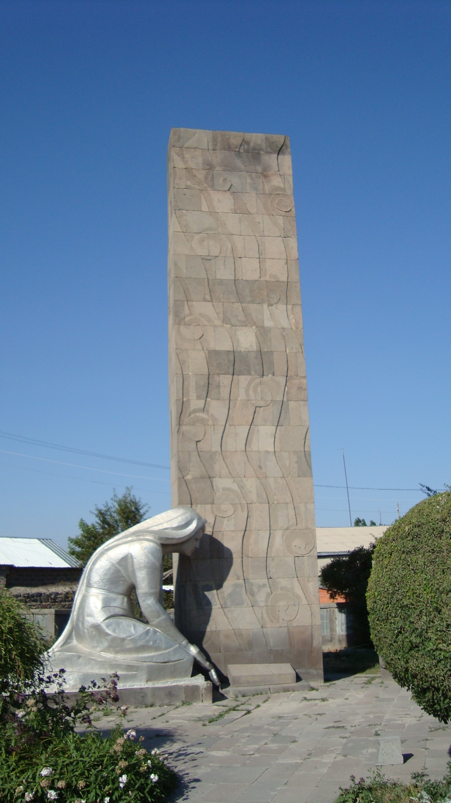

Short Info
Vardenis (Armenian: Վարդենիս) (pronounced Vartenis) is a town and urban municipal community in the
southeastern part of the Gegharkunik Province of Armenia. It is located in the valley of the Masrik River,
on the territory of the Masrik artesian basin at 2,006 metres (6,581 feet) above sea level, near the
southeastern shores of Lake Sevan. It is 170 kilometres (110 miles) by road east of the capital Yerevan,
and 75 kilometres (47 miles) southeast of the provincial centre Gavar. The administrative territory of Vardenis
comprises 3,006 hectares (7,430 acres), of which 736 hectares (1,820 acres) is occupied by the town itself. Vardenis
obtained its status as an urban settlement in 1995.As of the 2011 census, the population of the town was 12,685.
However, as per the 2016 official estimate, the population of Vardenis is 12,600. Learn More...
Follow us in Facebook
acebook is relly good for me!

History
The current territory of Vardenis was part of the Sotk canton of historic Syunik; the 9th province of Greater Armenia.
According to traditional legends, the settlement was founded as Geghamabak by Gegham; the grandson of the legendary
Hayk who is considered the legendary patriarch and founder of the Armenian nation.
According to historian Ghevond Alishan, prince Gaburn Vasak of the Siunia dynasty, founded the settlement
of Vasakashen on the territory of modern-day Vardenis during the 9th century, which survived until the 17th century.
Learn More...
Follow us in Instagram
Instagram is relly good for me!